I'm a 4th year Ph.D. student at UC Berkeley EECS, advised by Amy Pavel. My work has been recognized and supported by Google Ph.D. Fellowship.
My research focuses on accessible Human-AI collaboration. I build systems that help people inspect AI outputs, act with AI guidance, and intervene during AI execution - especially when visual access or attention is limited.
I spent first three years of my Ph.D. at UT Austin. I completed my B.Sc in Computer Science at KAIST advised by Juho Kim. I also worked as a research intern at Adobe Research (x2) and Naver AI Lab.
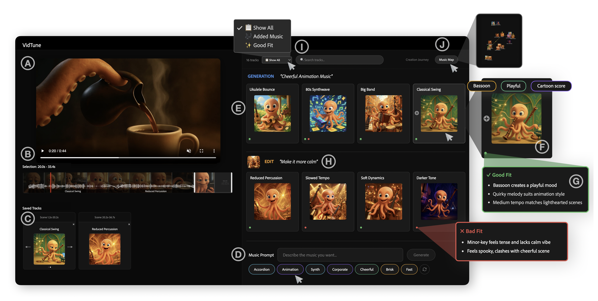
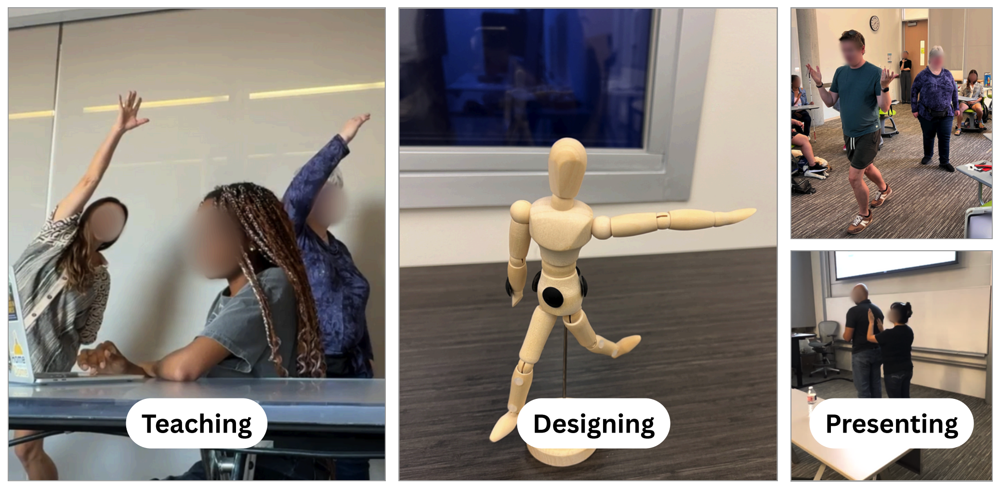
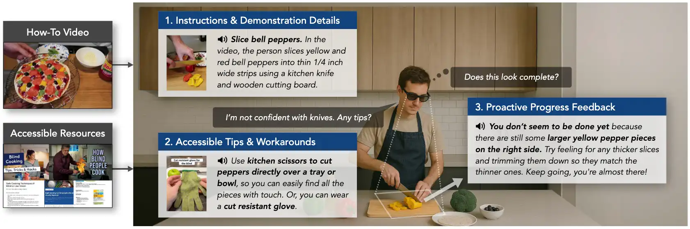
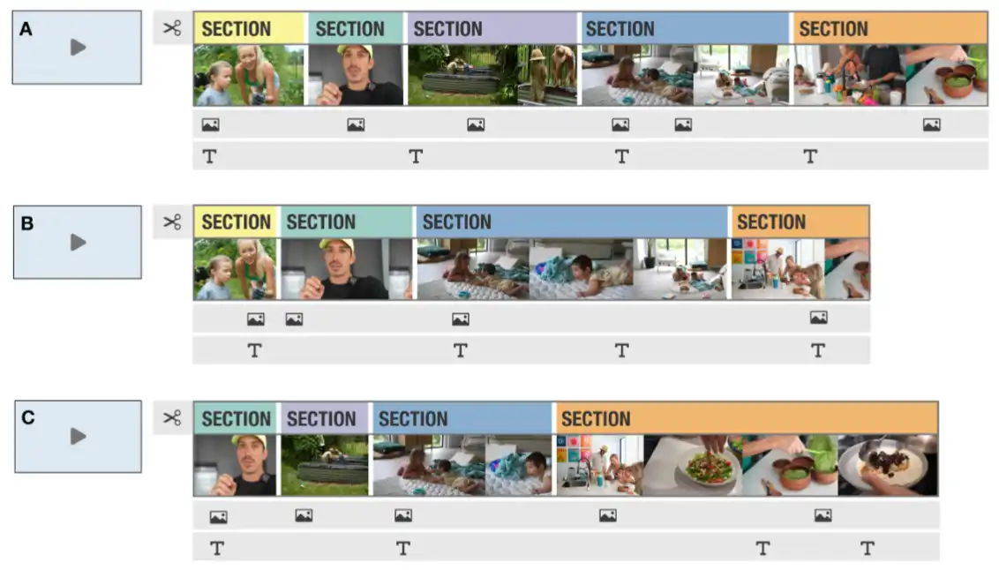
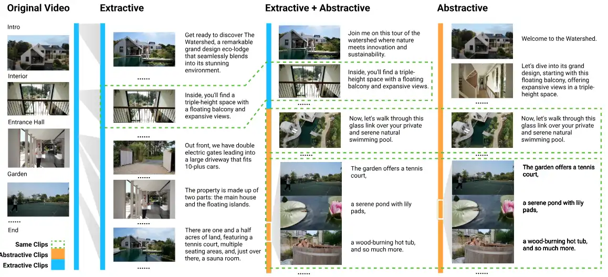
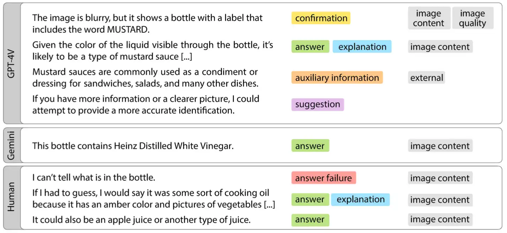
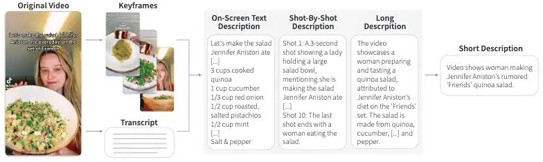
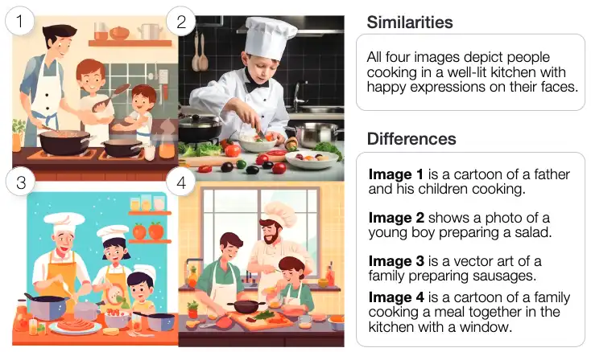
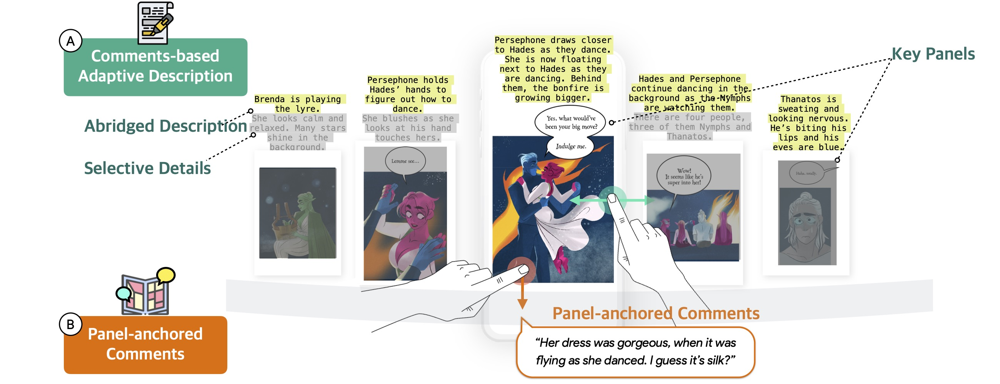
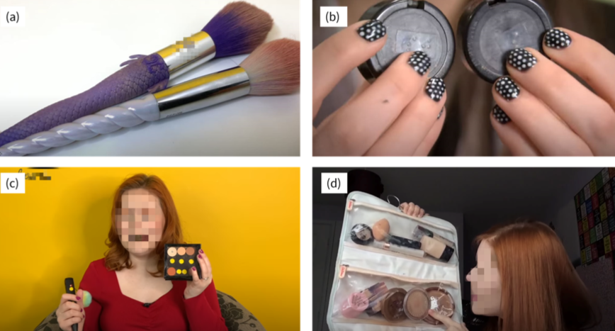
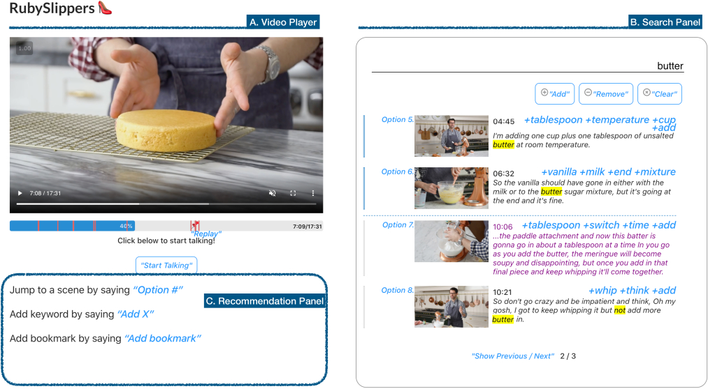
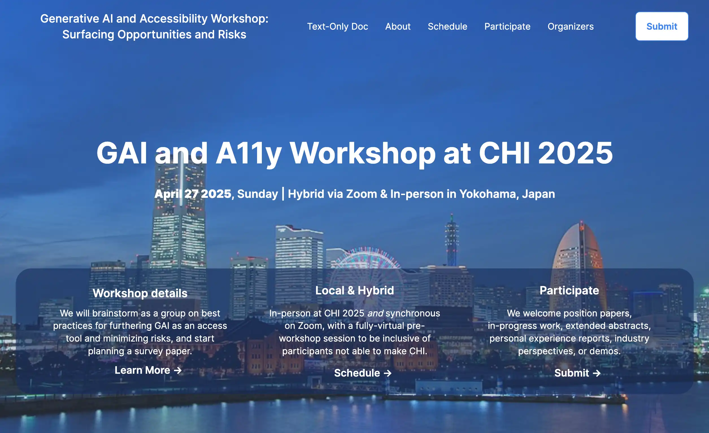
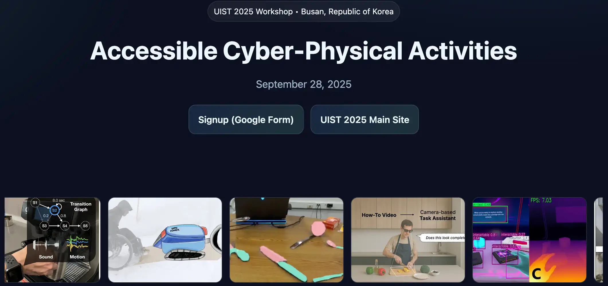